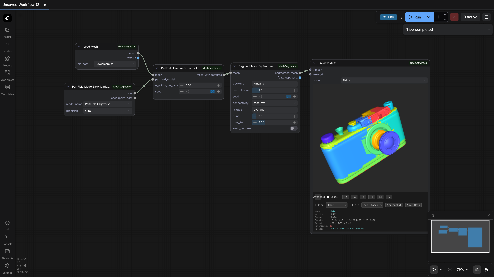
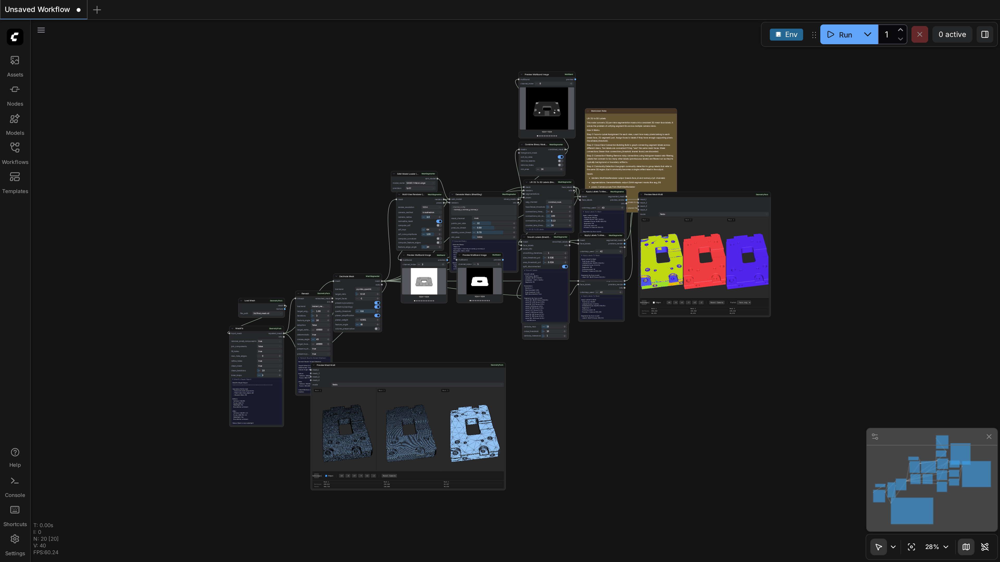
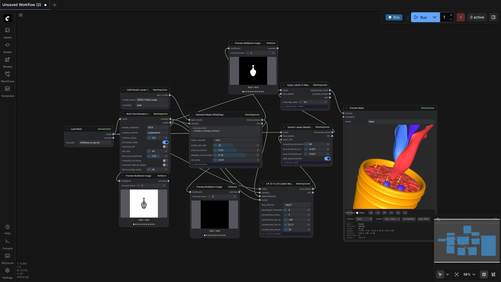

ComfyUI-MeshSegmenter
Test Results
2026-02-25 08:46 UTC
Linux-6.8.0-90-generic-x86_64-with-glibc2.35
Intel(R) Xeon(R) CPU E5-2683 v4 @ 2.10GHz
NVIDIA RTX A6000
100.0%
3 passed
3/3 tests
Workflows
Grid
List

partfield-seg
pass
49.50s

recon
pass
287.12s

samesh-seg
pass
117.03s
Downloaded Models
6 files · 2.0 GB
models/partfield/
1.2 GB
model_objaverse.ckpt
1.2 GB
.cache/huggingface/download/model_objaverse.ckpt.metadata
125.0 B
.cache/huggingface/.gitignore
1.0 B
models/sam/
856.5 MB
sam2.1_hiera_large.pt
856.5 MB
.cache/huggingface/download/sam2.1_hiera_large.pt.metadata
124.0 B
.cache/huggingface/.gitignore
1.0 B
×
0.0s / 0.0s
Resource Usage
RAM (GB)
VRAM (GB)